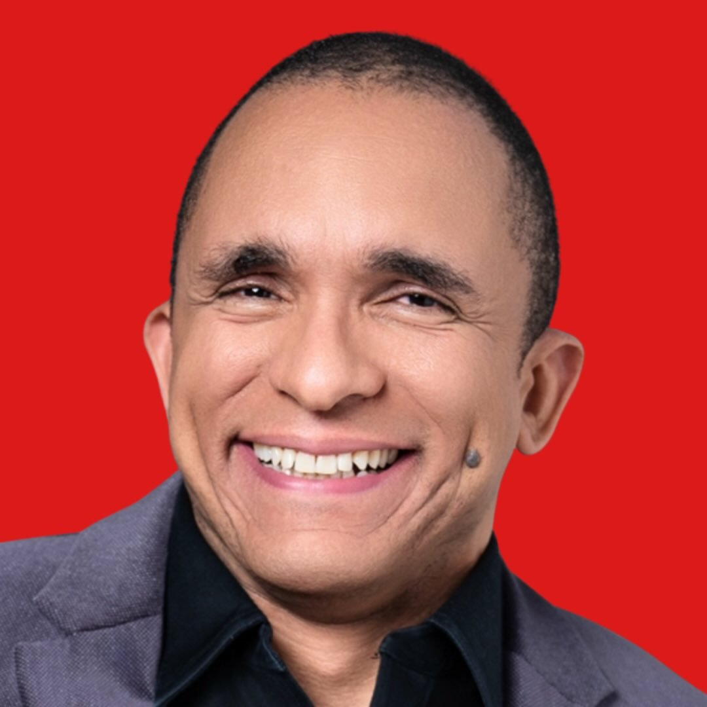

Conrado Adolpho
Pioneiro do Marketing Digital no Brasil

O Conselho Consultivo da LEVEL 5 apoia empresários com visão, estrutura e acompanhamento recorrente para transformar o isolamento da decisão em potência estratégica.
O isolamento no topo é o maior gargalo para a expansão sustentável. Sem o contraponto de uma visão externa qualificada, o crescimento estagna sob o peso da sobrecarga operacional e da falta de clareza estratégica.
Sentimento de estar sempre apagando incêndios sem tempo para pensar no futuro.
Falta de dados e de um segundo olhar crítico sobre movimentos de alto risco.
A empresa bateu no teto da capacidade de gestão do dono atual.
Dificuldade em priorizar o que realmente move o ponteiro do negócio.
"Não se trata de gerir a empresa por você. Trata-se de fazer com que você não precise decidir tudo sozinho."
Ritmo e cadência para garantir que o plano saia do papel e se torne realidade operacional.
Perspectiva isenta de quem já trilhou o caminho e conhece os atalhos e perigos.
Métricas reais e cobrança profissional sobre os marcos de crescimento definidos.
Espaço seguro para debater sucessão, fusões, aquisições e crises estruturais.
Empresas familiares ou de gestão intuitiva que buscam governança e processos de nível global.
Parcerias que precisam de uma mediação técnica para alinhar visão de futuro e distribuição de esforços.
Fundadores que desejam sair da operação diária para focar exclusivamente no crescimento estratégico.
Mapeamento de novos mercados e canais de escala.
Gestão baseada em dados reais e indicadores de performance.
Como a sua marca é percebida e defendida no mercado competitivo.
Estrategista focado em crescimento empresarial e estruturação operacional. Com décadas de experiência no chão de fábrica da gestão, Marcio desenvolveu uma metodologia para destravar o potencial de empresas em maturação.
"Minha missão é alargar a perspectiva do empresário, organizando raciocínios complexos em caminhos de execução simples e rentáveis."
Dependendo do desafio da empresa, o Márcio aciona especialistas de referência para ampliar o olhar técnico do conselho e acelerar decisões com mais segurança.

Pioneiro do Marketing Digital no Brasil
Especialista High-Growth no Mercado Imobiliário
Mentor em Protagonismo Pessoal - Domine seu Palco
Mentor e Formador de Conselheiros Empresariais
Mentora de Empresários - Transformando empresários em CEOs
Diretora Azul Viagens
Editor-Chefe da Forbes Brasil
Outras conexões
Além destes nomes, o conselho conta com outras conexões estratégicas para demandas específicas de mercado, operação e governança.
Mentalidade A
Foco apenas em faturamento, muitas vezes sacrificando a margem e a saúde mental.
Mentalidade Level 5
Construção de ativos, processos e governança que valorizam o equity do negócio.
Análise profunda da maturidade atual e gargalos de gestão.
Estruturação dos ritos, conselheiros e calendário estratégico.
Execução das reuniões com pautas de alto impacto e governança.
Monitoramento de resultados e ajuste de rota em tempo real.

Muitos empresários acreditam que conselhos são restritos a multinacionais de capital aberto. A realidade é que o Conselho Consultivo é a ferramenta mais eficiente para tornar uma PME em maturação em uma empresa grande amanhã.
"O conselho não é o prêmio pela chegada, é o veículo que te leva até lá."
Agende uma conversa estratégica com nossos especialistas e entenda como o Advisory Board pode blindar e acelerar seu negócio.